No place like home
Sometimes, you just want to travel somehere locally, almost a stones throw away.. we're based in England, and make yearly trips to other parts of England, Wales or Scotland (who doesn't love a staycation?!). Staycations provide a perfect opportunity to escape and enjoy the countryside, which is perfect if you want to bring your pup-baby along.
England
Cotswolds*
The Cotswolds is a beautiful area in the south of England. Throughout the towns and villages in the area, there are traditional style homes in terms of golden stone scattered throughout the rolling hills. Everywhere you look is incredibly picturesque and charming.
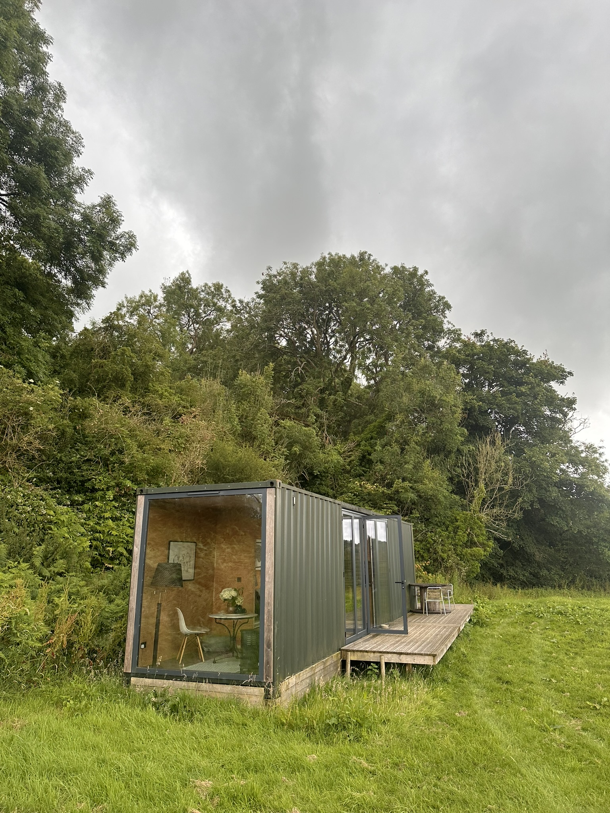 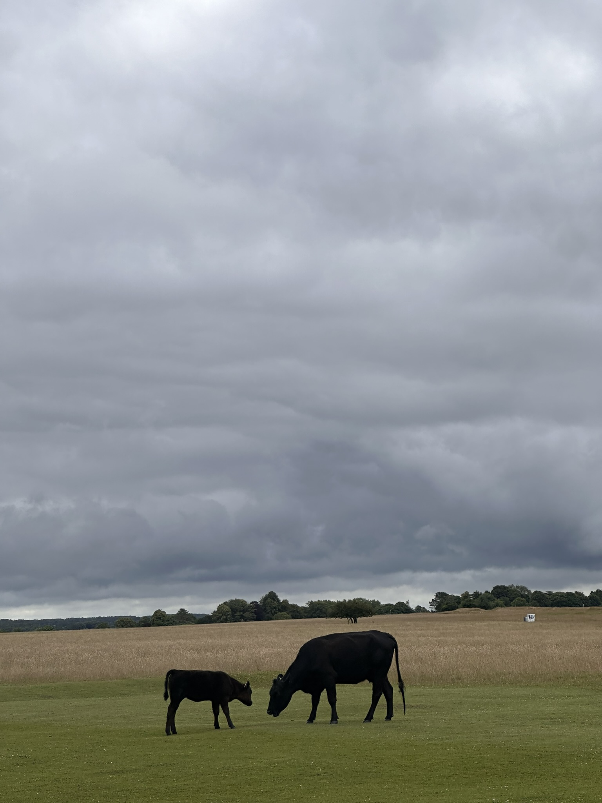 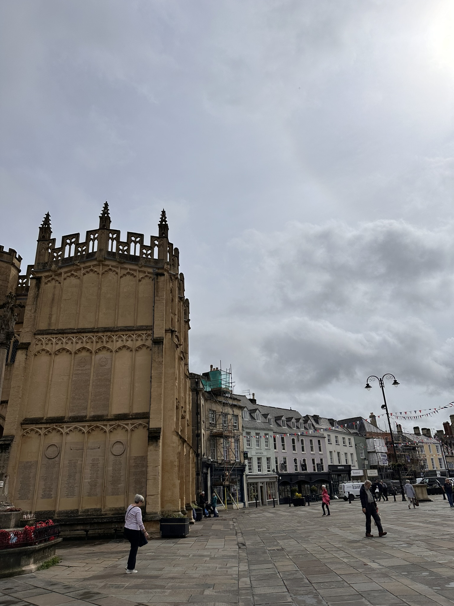Carden Park, Cheshire
For my partners birthday, we booked a play-and-stay package, so 2 rounds of golf and a nights stay. I played one round of golf, and opted to visit the spa for the final day as it is considered "world class". It was enjoyable all-round, and would recommend a visit!
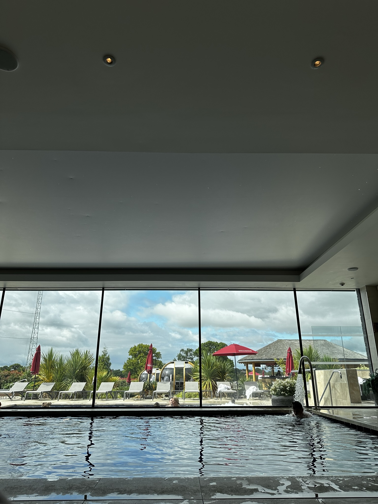 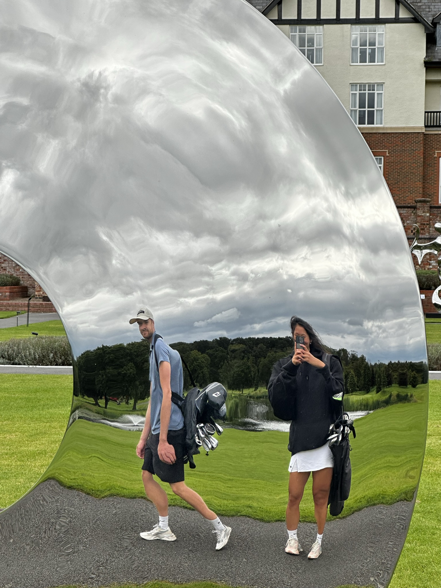 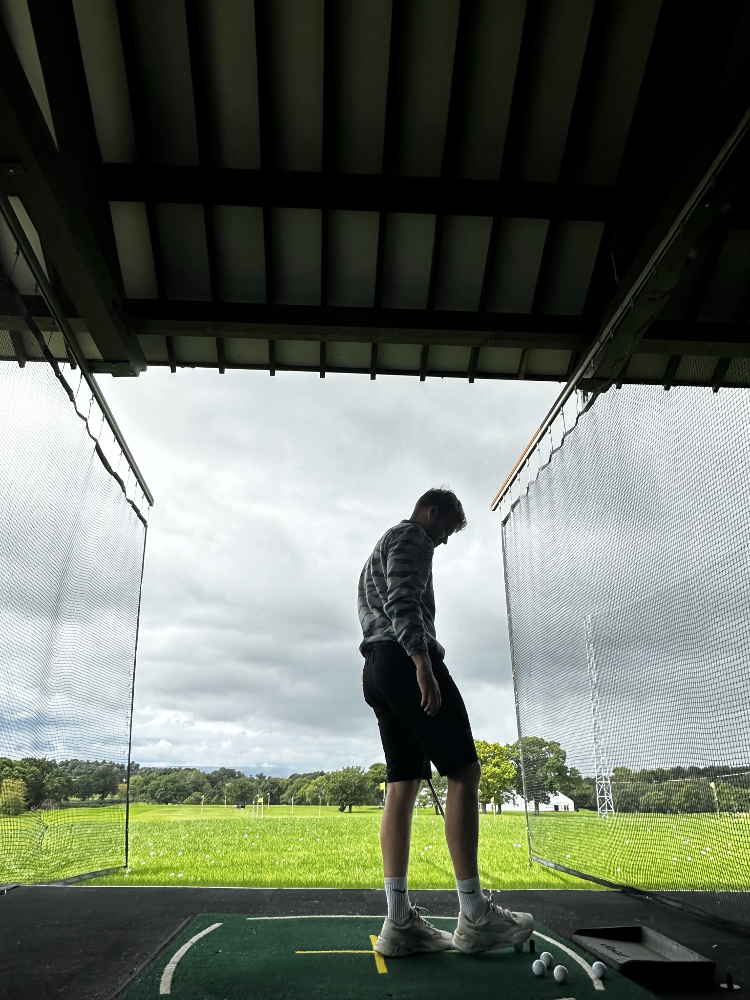Scotland*
St Andrews
We're planning a proper road-trip around Scotland later this year, as we've explored Edinburgh (not covered here) and St Andrews. We're a big fan of watching and playing golf, so headed up to watch the Dunhill links. This was our second attempt, as it was called off the year prior due to the storms. In all honesty, this wasn't our favourite golf event (prefer Wentworth), but, it was still a lovely trip, and we got to spend a lot of time on the beach.
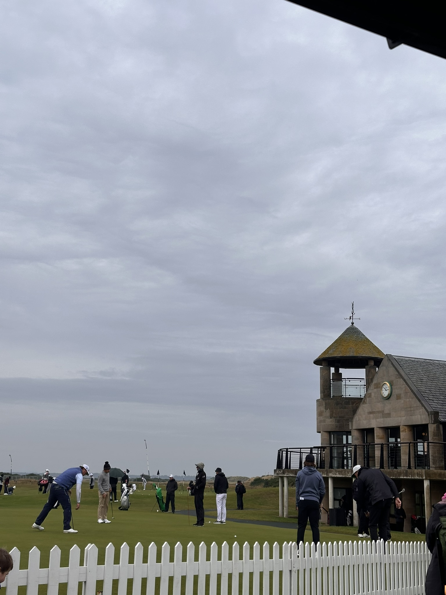 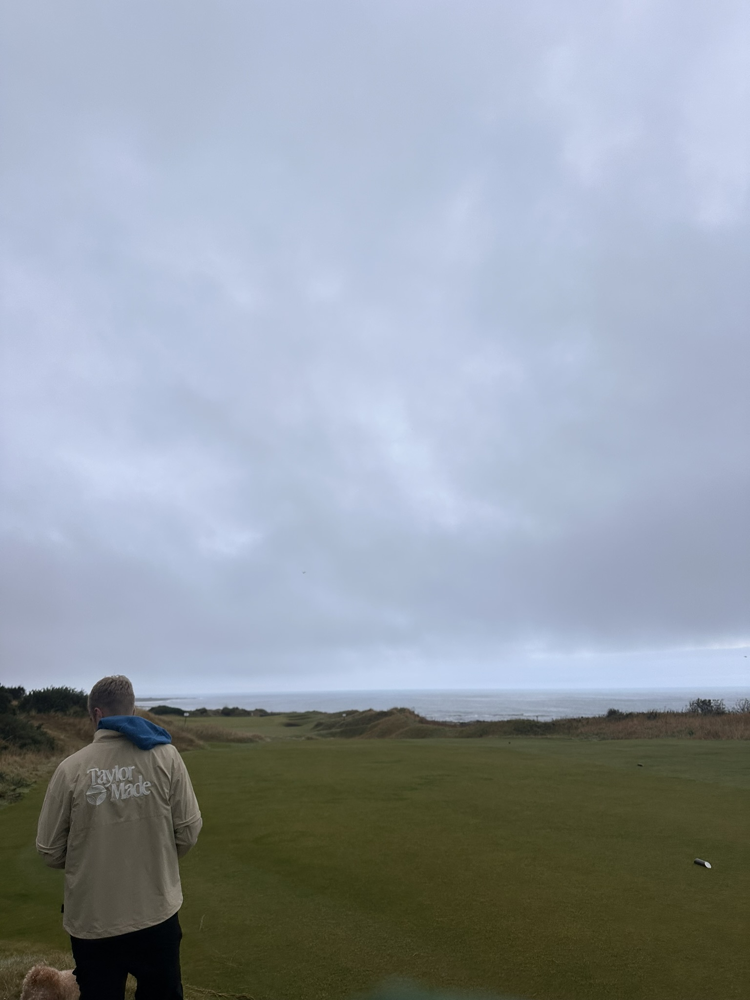 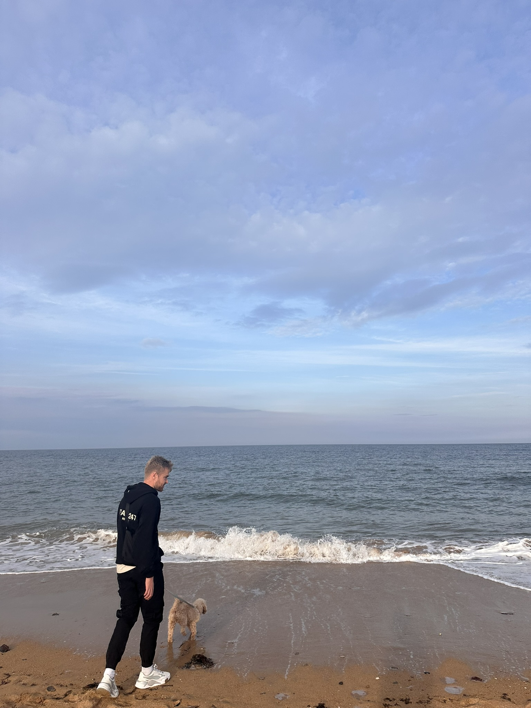Wales*
Rhosneigr
Similar to Scotland, we haven't explored much of Wales, as we often choose to stay in Angelsey. It's a perfect destination for a weekend away, with our favourite spot being Rhosneigr. Places around Wales are often dog-friendly, and we had a lovely roast dinner at the Soundmount club.There are plenty of places to walk the pup, along the beach and through the sand dunes. If you're lucky, you can catch the RAF during their practice sessions. 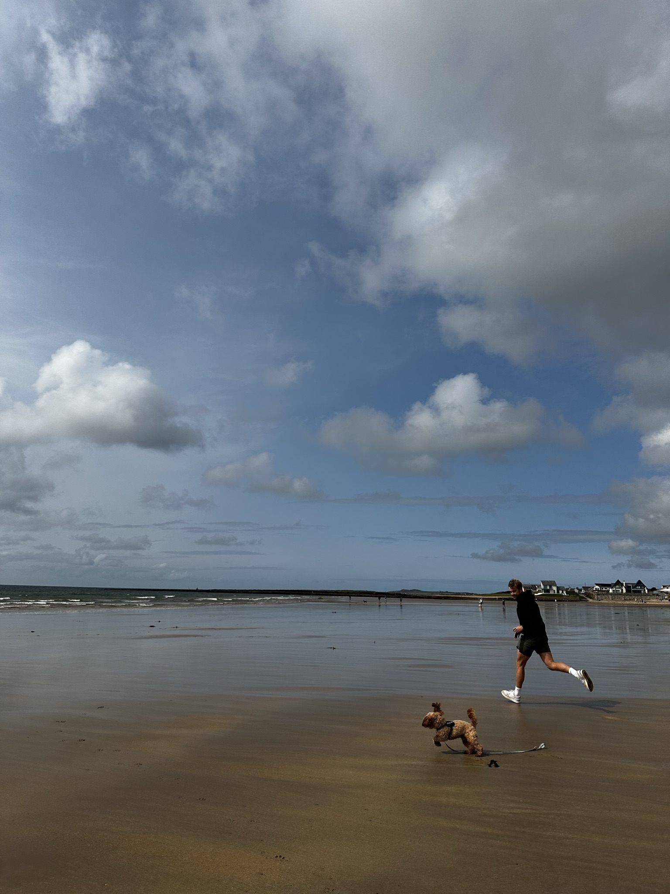 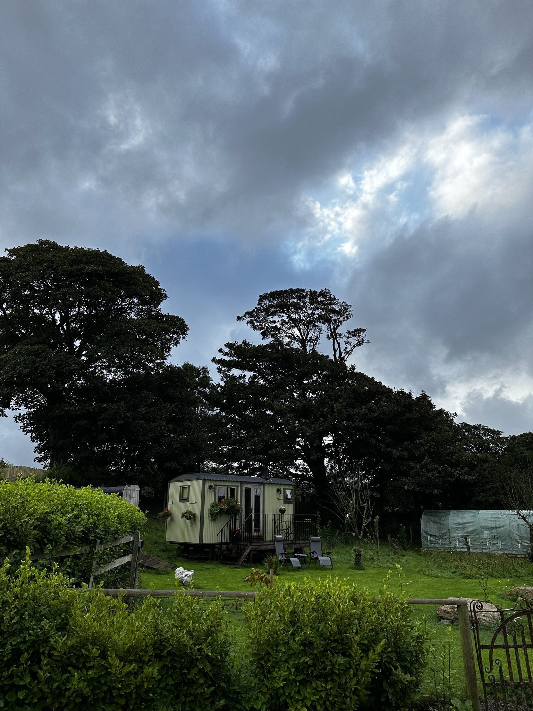 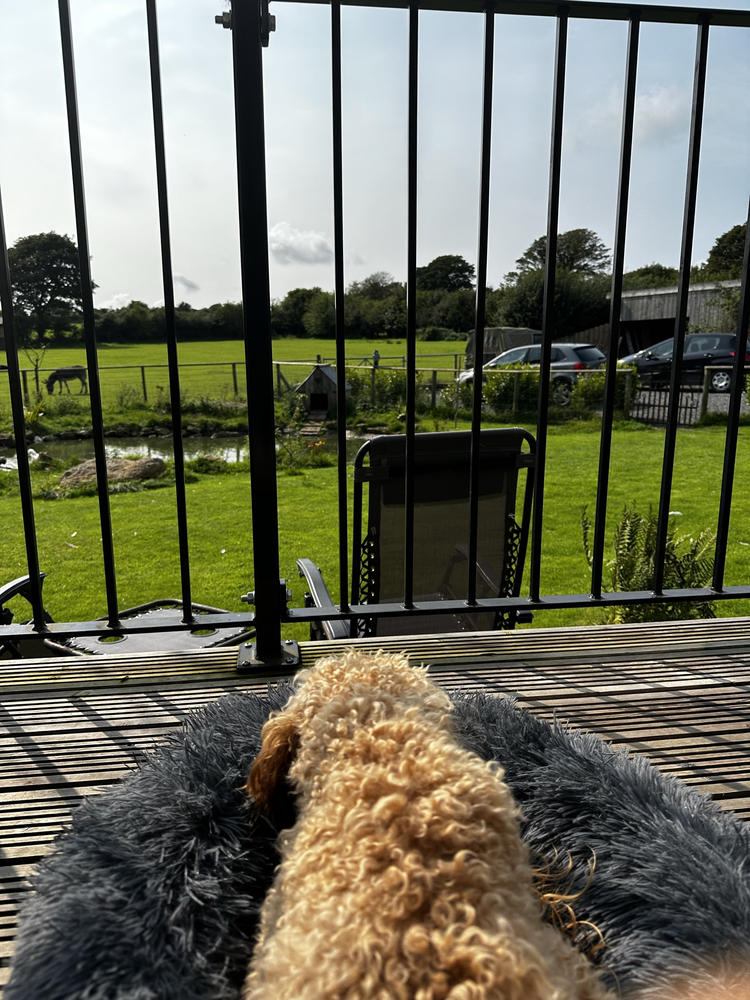